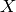
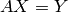
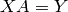
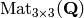
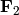

Sage поддерживает стандартные конструкции из линейной алгебры, как характеристические полиномы, ступенчатые формы, суммы элементов главной диагонали матрицы, разложения.
Создавать и перемножать матрицы легко:
sage: A = Matrix([[1,2,3],[3,2,1],[1,1,1]])
sage: w = vector([1,1,-4])
sage: w*A
(0, 0, 0)
sage: A*w
(-9, 1, -2)
sage: kernel(A)
Free module of degree 3 and rank 1 over Integer Ring
Echelon basis matrix:
[ 1 1 -4]
Решение матричных уравнений также выполняется без затруднений, используя метод solve_right. Вычисление A.solve_right(Y) возвратит матрицу (или вектор)  так, что :
sage: Y = vector([0, -4, -1])
sage: X = A.solve_right(Y)
sage: X
(-2, 1, 0)
sage: A * X # checking our answer...
(0, -4, -1)
\ может быть использован вместо solve_right; используйте A \ Y вместо A.solve_right(Y).
sage: A \ Y
(-2, 1, 0)
Если решения не существует, то Sage вернет ошибку:
sage: A.solve_right(w)
...
ValueError: matrix equation has no solutions
Используйте A.solve_left(Y), чтобы найти в .
Sage может находить собственное число и собственный вектор:
sage: A = matrix([[0, 4], [-1, 0]])
sage: A.eigenvalues ()
[-2*I, 2*I]
sage: B = matrix([[1, 3], [3, 1]])
sage: B.eigenvectors_left()
[(4, [
(1, 1)
], 1), (-2, [
(1, -1)
], 1)]
(Результат eigenvectors_left - это список троек: (собственное число, собственный вектор, многообразие).) Собственные числа и векторя для QQ или RR также могут быть вычислены с помощью Maxima (см. Maxima).
Как указано в Базовых коьцах, кольцо, в котором определена матрица, влияет на некоторые ее свойства. В следующем примере первый аргумент команды matrix сообщает Sage, чтобы матрица рассматривалась как матрица целых чисел (случай с ZZ), как матрица рациональных чисел (QQ) или как матрица вещественных чисел(RR):
sage: AZ = matrix(ZZ, [[2,0], [0,1]])
sage: AQ = matrix(QQ, [[2,0], [0,1]])
sage: AR = matrix(RR, [[2,0], [0,1]])
sage: AZ.echelon_form()
[2 0]
[0 1]
sage: AQ.echelon_form()
[1 0]
[0 1]
sage: AR.echelon_form()
[ 1.00000000000000 0.000000000000000]
[0.000000000000000 1.00000000000000]
Создадим пространство , состоящее из матриц  с элементами из рациональных чисел:
с элементами из рациональных чисел:
sage: M = MatrixSpace(QQ,3)
sage: M
Full MatrixSpace of 3 by 3 dense matrices over Rational Field
(Для того, чтобы создать пространство из матриц 3 на 4, используйте MatrixSpace(QQ,3,4). Если число столбцов не указано, по умолчанию оно будет равно числу строк (MatrixSpace(QQ,3) эквивалентно MatrixSpace(QQ,3,3).) Матричное пространство имеет базис, который содержится в Sage в виде списка:
sage: B = M.basis()
sage: len(B)
9
sage: B[1]
[0 1 0]
[0 0 0]
[0 0 0]
Создадим матрицу как элемент M.
sage: A = M(range(9)); A
[0 1 2]
[3 4 5]
[6 7 8]
Далее покажем вычисление матриц, определенных в конечных полях:
sage: M = MatrixSpace(GF(2),4,8)
sage: A = M([1,1,0,0, 1,1,1,1, 0,1,0,0, 1,0,1,1,
... 0,0,1,0, 1,1,0,1, 0,0,1,1, 1,1,1,0])
sage: A
[1 1 0 0 1 1 1 1]
[0 1 0 0 1 0 1 1]
[0 0 1 0 1 1 0 1]
[0 0 1 1 1 1 1 0]
sage: rows = A.rows()
sage: A.columns()
[(1, 0, 0, 0), (1, 1, 0, 0), (0, 0, 1, 1), (0, 0, 0, 1),
(1, 1, 1, 1), (1, 0, 1, 1), (1, 1, 0, 1), (1, 1, 1, 0)]
sage: rows
[(1, 1, 0, 0, 1, 1, 1, 1), (0, 1, 0, 0, 1, 0, 1, 1),
(0, 0, 1, 0, 1, 1, 0, 1), (0, 0, 1, 1, 1, 1, 1, 0)]
Создадим под-пространство в , охватывающее вышеперечисленные строки.
sage: V = VectorSpace(GF(2),8)
sage: S = V.subspace(rows)
sage: S
Vector space of degree 8 and dimension 4 over Finite Field of size 2
Basis matrix:
[1 0 0 0 0 1 0 0]
[0 1 0 0 1 0 1 1]
[0 0 1 0 1 1 0 1]
[0 0 0 1 0 0 1 1]
sage: A.echelon_form()
[1 0 0 0 0 1 0 0]
[0 1 0 0 1 0 1 1]
[0 0 1 0 1 1 0 1]
[0 0 0 1 0 0 1 1]
Sage поддерживает разреженную линейную алгебру.
sage: M = MatrixSpace(QQ, 100, sparse=True)
sage: A = M.random_element(density = 0.05)
sage: E = A.echelon_form()
Мульти-модульный алгоритм в Sage работает хорошо для квадратных матриц (но не так хорошо для неквадратных матриц):
sage: M = MatrixSpace(QQ, 50, 100, sparse=True)
sage: A = M.random_element(density = 0.05)
sage: E = A.echelon_form()
sage: M = MatrixSpace(GF(2), 20, 40, sparse=True)
sage: A = M.random_element()
sage: E = A.echelon_form()
Заметьте, что в Python использование заглавных букв играет роль:
sage: M = MatrixSpace(QQ, 10,10, Sparse=True)
...
TypeError: MatrixSpace() got an unexpected keyword argument 'Sparse'